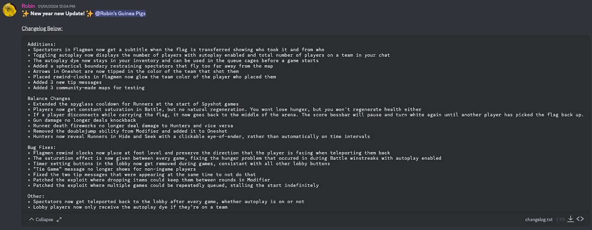
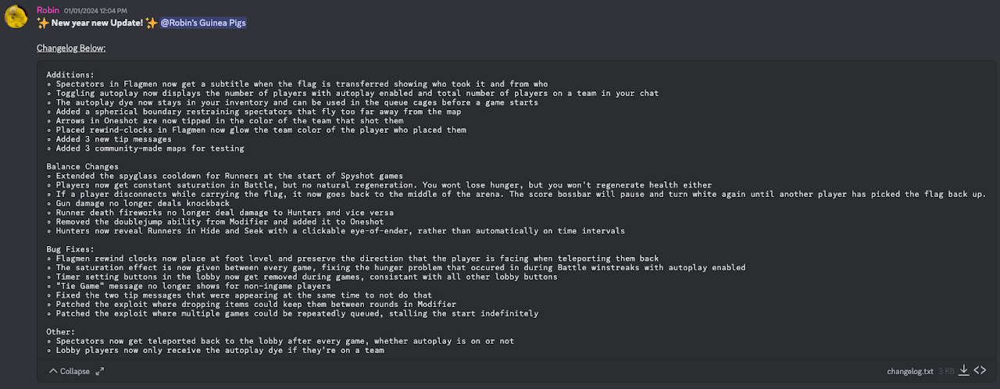
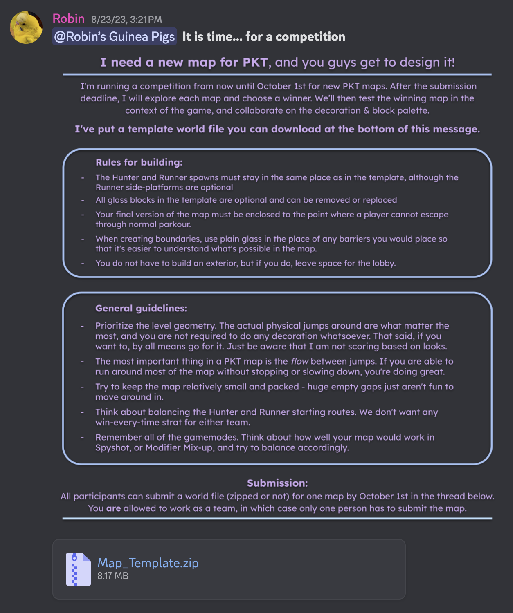
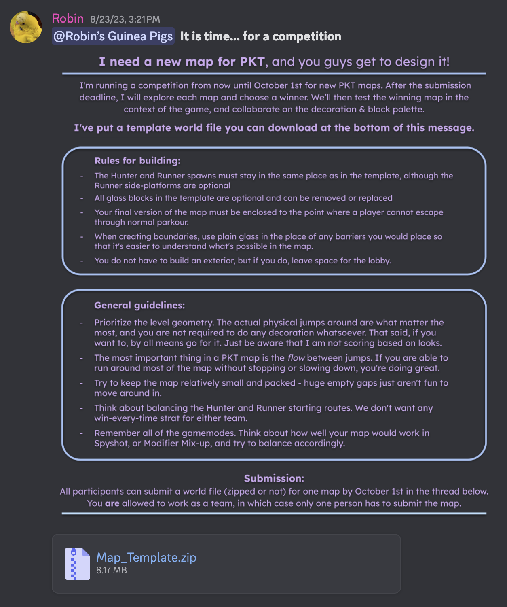

Parkour Tag (abbreviated to PKT) is my longest-running programming passion project, started back in October 2021.
In short, PKT is a game I programmed for my friends to play within Minecraft, using the game's built-in datapack programming language. Throughout the years I've updated it many times to add new gamemodes, features, and bug-fixes, and I've ended up completely refactoring and redesigning the game multiple times from the ground up to incorporate new programming skills and techniques that I learn.
– Diciplines –
Beyond just programming, Parkour Tag as a project has encompassed many of the artistic disciplines that I love, including visual art, music creation, and video editing.
I think the thing that best shows how these mediums intersect is the trailer I made in December of 2022 to announce the next version of PKT that I had been working on in secret.
– Organization –
In order to better manage and keep track of Parkour Tag progress, I started a private Trello board as a TODO list and taught myself to use Github for version control.
Developing a Github workflow was a particularly helpful skill, not just for PKT development, but for other projects as well.
— Community —
Since Parkour Tag is a small game designed for my friends to play, said friends act as my playtesters, offering a lot of helpful feedback and good ideas for me to implement.
My friend group's Discord server has a forum channel specifically for PKT bug reports and miscellaneous suggestions, as well as a channel I use to post changelogs for each update and blog-like accounts of programming challenges I run into.
— Bonus Blog Posts —
 

 
